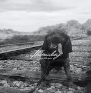
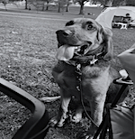

L&W Clothing began in the fall of 2023. We created L&W named after our two bloodhounds, Lani and Waylon.
Drawing inspiration from Lani and Waylon, a bloodhound is a sophisticated breed that makes a true companion. L&W strives to create a southern-inspired brand that provides comfort and durability. L&W will become a loved brand, a true companion.
L&W Clothing was born out of a love story and a shared passion for authenticity and companionship. In the fall of 2023, Jacob Benson and Anna Hays embarked on a journey to create a brand that would not only reflect their Southern roots but also celebrate the unwavering companionship of their two beloved bloodhounds, Lani and Waylon.
Lani and Waylon, the heartbeat of our brand, are more than just pets; they are family. As bloodhounds, known for their loyalty and gentle demeanor, Lani and Waylon embody the spirit of true companionship. Their keen sense of smell may lead them on adventures, but it's their warm presence and love that inspire everything we do.
Guided by the sophistication of the bloodhound breed and the comfort they provide, L&W Clothing is a tribute to Southern living. We believe in creating a brand that not only offers stylish and durable apparel but also captures the essence of a comforting companion—a brand that becomes a part of your journey, wherever life may take you.
L&W Clothing is more than just a label; it's a narrative woven with threads of love, passion, and authenticity. From the initial concept to the final stitch, each garment is a testament to the values we hold dear. We strive to be more than a clothing brand; we aim to be a companion in your everyday adventures, just like Lani and Waylon.
Join us on this journey, where style meets companionship, and every piece tells a story.